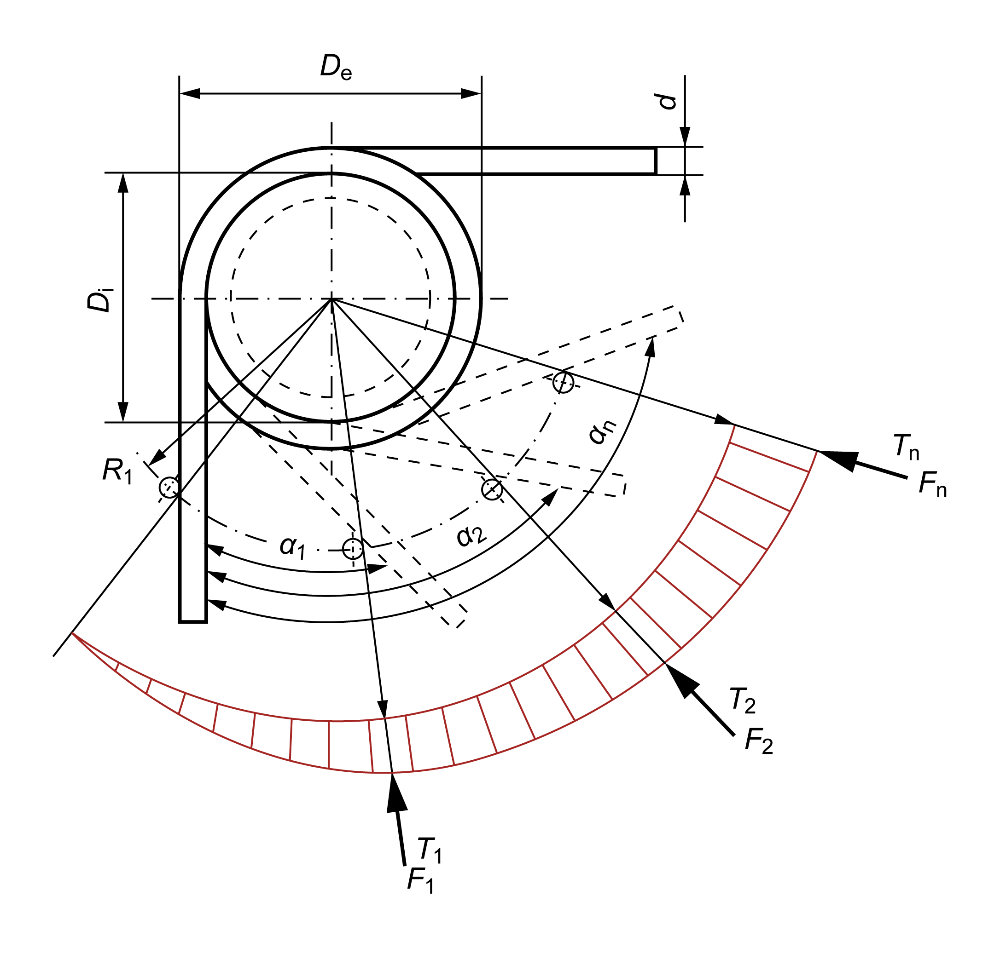

|
|
|


扭簧
扭簧的计算在 DIN EN 13906-3 (2014) [100] 中定义。
工况数据
定义载荷时，您可以输入弹簧力、弹簧角度或弹簧扭矩的值。为此，您必须首先指定作用在弹簧上的力的扭力臂（R1,R2）。
值 α0 用于标识起始角度。它与载荷方向（缠绕方向）一起用于计算弹簧的最大角度。根据您在列表框中选择的值，报告还将包含工作芯轴或工作套筒直径的参考值。您还可以指定弹簧承受静态、准静态还是动态力。
几何
您可以直接从此表中按 DIN 2098 Part 1 选择几何数据。如果选择，则可以选取列表中的选定值或输入您自己的值。您可以直接选择和输入弹簧直径。缠绕间隙是相邻簧圈之间的距离。

图 48.1：扭簧的定义
Leg Springs
The calculation used for leg springs is defined in DIN EN 13906-3 (2014) [100].
Operating data
When you define a load you can either enter a value for the spring force, spring angle, or spring torque. To do this, you must first specify the torsion arm (R1,R2) on which the force is applied to the spring.
The value α0 is used to identify the starting angle. This is used together with the direction of load (sense of winding) to calculate the maximum angle of the spring. Depending on which value you select in the list, the report will also include a reference value for the diameter of the working mandrel or working sleeve. You can also specify whether the spring is to be subject to static, quasi-static or dynamic force.
Geometry
You can select the geometry data according to DIN 2098 Part 1 directly from this table. If you select , you can either take selected values from the list or enter your own values. You can select and enter the spring diameter directly. The winding clearance is the distance between the coils.
Figure 48.1: Definitions used for leg springs